Hellbent is an action RPG emphasizing complex combat mechanics, deep modular equipment, and challenging boss encounters. As a core programmer on the project, my responsibilities span both the underlying gameplay architecture and the player-facing user interfaces.
Key Contributions
Controller Support: Implemented comprehensive controller support, ensuring seamless input mapping and intuitive navigation across all gameplay and menu systems.
Modular Equipment Systems: Developed scalable inventory and equipment systems that allow for dynamic gear swapping and stat adjustments during gameplay.
Advanced UI/UX Implementation: Built responsive and intuitive user interfaces for inventory management, player stats, and combat HUDs.
Resource & Progression Systems: Designed and built a mana system, a gem quality-tier system with drag-to-merge crafting and one-time shrine upgrades, and a passive “Attunement” gem that changes how each elemental gauntlet fights.
Game Feel & Polish: Tuned hit-stop, flashes, camera nudges, rumble and slow motion into one combat feedback layer, plus themed VFX for gem arrivals, charged attacks, level-ups and the main menu.
International Localization: Engineered robust localization systems utilizing the Unity Localization package to seamlessly support multiple languages, including German, Japanese, and Simplified Chinese for global accessibility.
UI/UX Evolution
A major focus of my work involved iterating on the game's interface to improve player clarity and thematic consistency. Below is a comparison showing the transition from early functional blockouts to the finalized, stylized UI.
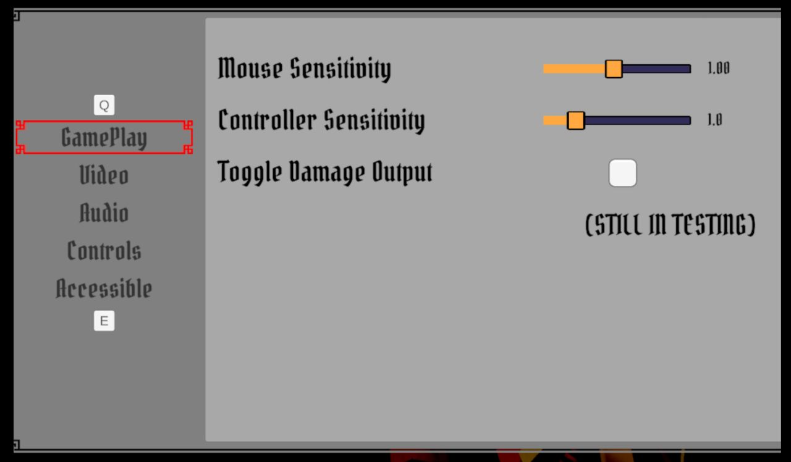
Settings Menu (Prototype)
Early layout focusing on basic functionality and logic.
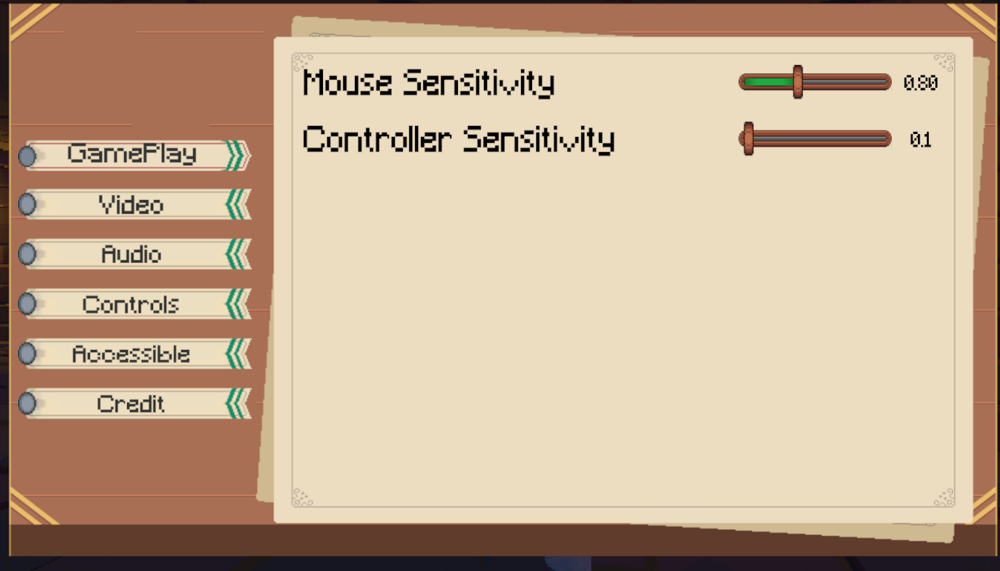
Settings Menu (Refined)
Final iteration featuring custom sliders, parchment aesthetics, and clear typography.
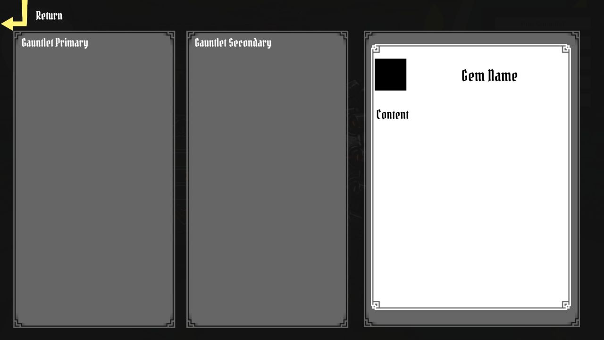
Equipment Menu (Prototype)
Initial wireframe utilizing standard gray-box panels.
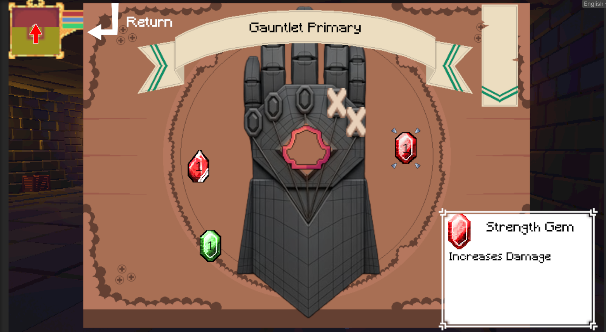
Equipment Menu (Refined)
Fully integrated visual equipment system featuring modular gem slotting directly on the gauntlet model.
Dynamic Interface & Player Feedback
Beyond static layouts, I programmed dynamic UI behaviors to enhance immersion and provide clear, unobtrusive player feedback.
Interactive Hint Animations
Contextual UI animations designed to guide the player without interrupting the flow of gameplay.
Dynamic HUD Fading
Programmed the combat HUD to dynamically disappear during safe exploration to maintain a clean, cinematic view.
Advanced UI Systems: Localization & Keybinds
Building scalable architecture is just as important as visual design. Below is a look at the robust systems I engineered for international localization and dynamic input mapping.
Seamless Localization
Demonstrating the UI dynamically adapting to different languages (including Asian character sets) without breaking the layout constraints.
Dynamic Input Mapping
A robust control mapping system that allows players to seamlessly rebind actions for both keyboard/mouse and supported controllers.
Latest Updates
October 2026
The past few weeks have been about turning Hellbent's moment-to-moment loop into something deeper and better-feeling: a mana economy, a crafting path for gems, a new passive gem that gives every elemental gauntlet its own fighting style, and a pass of polish across combat, menus and the first few seconds of every level. Here is what changed and how it works.
Mana System & HUD
Skills used to draw from the stamina pool. I added a dedicated mana resource so skill use has its own budget and the stamina bar stays about melee and dodging.
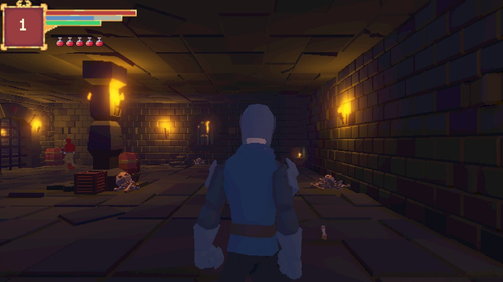
Health, mana and stamina in the combat HUD
The mana bar is laid over the blue strip already baked into the HUD frame art, using the same colour, so it reads as part of the original design.
Cost model: every skill (Q/E) costs the same 20 mana, because the gauntlet's element is what differentiates a skill. Unlike stamina, a cast needs the full cost, so a partly-filled pool can't cast.
Regeneration: a steady rate with no delay. My first value (5/s) let players spam skills, so after playtesting I dropped it to 2/s, roughly one cast every ten seconds, which leaves room for the regeneration gem to matter.
Persistence: current mana travels with the player between levels and is stored in the checkpoint save.
Three new gems:Arcane (more maximum mana), Wellspring (faster regeneration) and Siphon (mana back on every kill). They plug into the same modifier pipeline as the existing stat gems and are wired into the Backpack prefab, so they carry across levels.
Gem Quality Tiers, Merging & Shrines
Every gem now has a quality tier, and players can craft their way up. This gives the reward menu a second decision: take a new gem, or merge toward a stronger one.
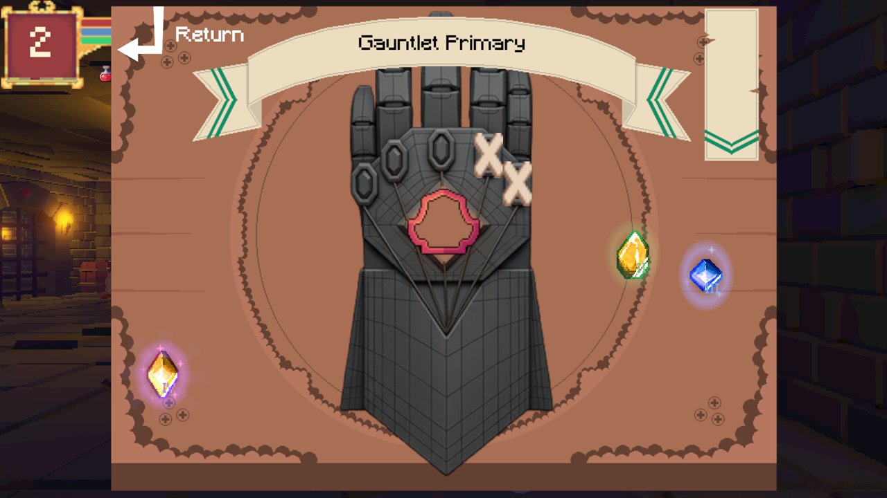
Tier 2, 3 and 4 gems in the reward menu
Each quality (Rough, Polished, Flawless, Radiant, Perfect) has its own colour, a roman-numeral badge and an animated aura that gets richer the higher the tier.
Scaling: a stat gem's modifiers are multiplied by its tier; skill gems have nothing to multiply, so they deal +50% skill damage per tier above one.
Drag-to-merge: dropping a gem onto the same gem at the same tier merges them into the next tier, both in the reward menu and in the inventory. Anything else (different gem, different tier) is refused with feedback instead of silently replacing or “eating” a gem.
Readable swaps: when two different gems trade places they fly across on arcs and land with a pulse, because players couldn't tell at a glance whether a swap had happened.
Shrines: an interactable shrine opens an upgrade screen where the player picks one equipped gem to raise by a tier. Each shrine can be used once, and used shrines are remembered by the save system.
Localization: tier names and labels live under their own string keys in the Gem table, so they never collide with a gem's own title or description, and they are translated for all four supported languages.
“Hellbent” Gem Arrivals
Reward gems used to simply drop onto the board. To match the game's name and look, they are now summoned one at a time in a burst of hellfire.
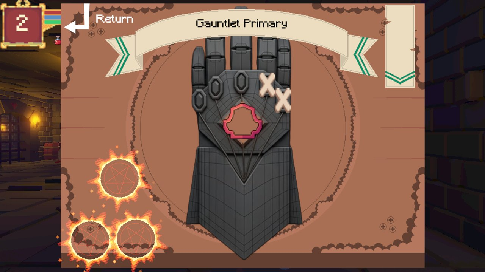
Summoning circles
A rune circle flickers up under a ring of fire that flares outward, hangs, then pulls back on itself dragging embers inward.
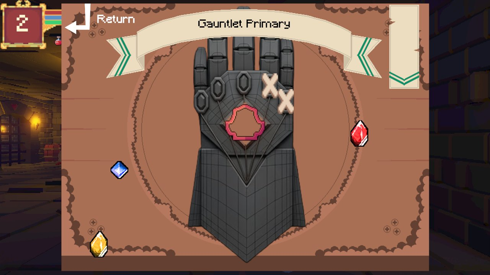
Safe placement
Gems land in the open space either side of the gauntlet, never on top of the banner, buttons or the gauntlet art.
Sequence: as the ring collapses the gem is born in a flash with a small board shake, then the next gem begins 0.65 seconds later. Still three gems per reward.
Built to be cheap: everything is UI images and DOTween running on unscaled time (the menu is paused), with the effect textures generated procedurally rather than hand-painted.
Placement logic: the old spawn check only tested a gem's centre against small boxes. It now measures the visible art of the gauntlet, banner, buttons and description box, adds the gem's own size plus padding, and prefers positions that don't overlap other gems.
Bug hunt: an extra animation played on the first gem. The level-up button was opening the menu twice in one frame (a UnityEvent and a direct call), leaving an effect playing over a gem that had already been replaced. The menu now ignores a second open in the same frame, and a new sequence cancels any one still running.
Combat Feel & Level-Up Polish
Hits needed to feel better. I built a small feedback layer that every melee hit and skill goes through, then tuned it by playing it.
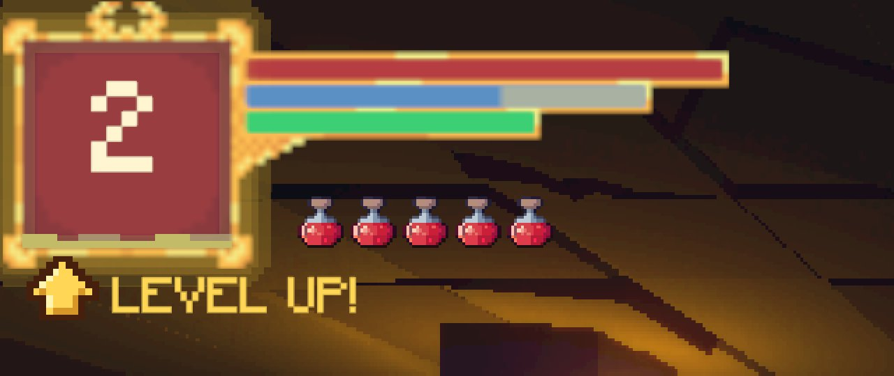
Redesigned level-up indicator
A pixel-font level number and a “LEVEL UP!” callout that appears while a reward is waiting; the small leftover square was removed. The mana bar is partly drained here.
Hit-stop & flash: a brief freeze on the enemy (about 0.05s on light hits, 0.1s on heavy, 0.12s on kills) and a short white flash, applied per enemy so overlapping hits don't fight each other.
Camera & rumble: a small camera knock in the direction of the hit that settles in about a fifth of a second, matched controller rumble, and a slow-motion beat on the last kill of a fight.
Iteration: my first take was a full-screen impact frame. It read more like a flashbang than a hit, so I cut it back, tried it only on one skill, then removed it and kept the subtler layers above.
Charged heavy attacks: holding the heavy attack pulses an element-coloured glow on the striking fist that builds with the charge and bursts on release.
XP bar: an animated wave runs through the fill so progress feels alive.
Stuck-attack bug: if an attack animation was cut off (for example by landing mid-air attack), the player stayed locked in “Attacking” forever. I added a failsafe that notices the animator is back on locomotion and ends the attack.
The Attunement Gem: Elemental Fighting Styles
The Projectile gem already changes with the gauntlet's element. Attunement is a new passive skill gem that does the same for melee: it empowers the basic and heavy attacks of whichever gauntlet it is socketed into, and only that gauntlet's fist.
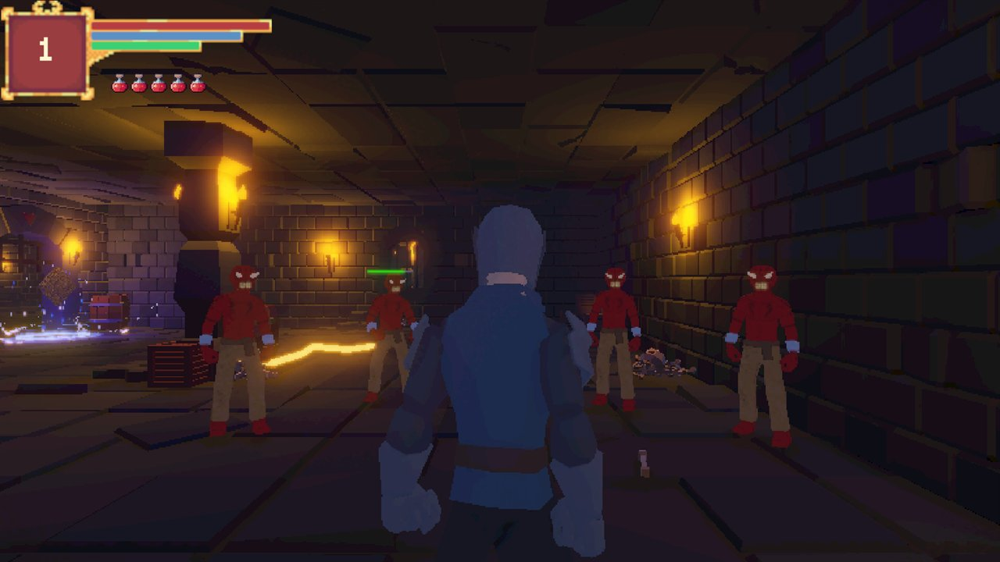
Lightning gauntlet
A heavy hit arcs to the nearest enemies, drawn as a jagged bolt with a flash on each target.
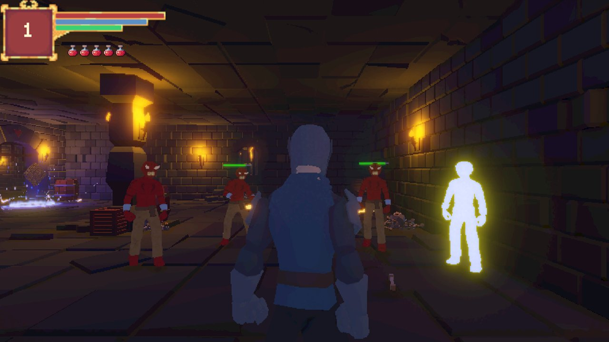
Ice gauntlet
Ten frost stacks freeze an enemy solid; stacks slow it on the way there.
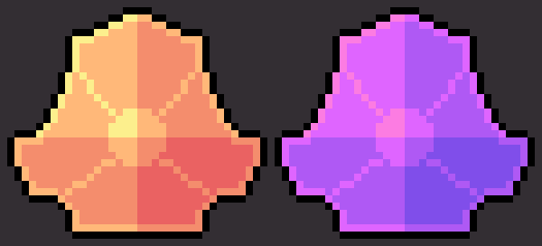
Gauntlet
What Attunement does
Fire
Basic attacks set the enemy alight: burn damage for 4 seconds that refreshes instead of stacking, without flinching the enemy.
Lightning
Basic attacks chain to 2 nearby enemies (6m, 40% damage). Heavy attacks chain to 3 enemies (9m, 60% damage).
Ice
Basic hits add 1 frost stack and heavy hits add 2, each stack slowing the enemy. At 10 stacks it freezes, then is briefly immune to freezing. Bosses freeze for a shorter time.
Earth
Basic attacks resist interruption (40% poise damage taken). Heavy attacks take 1.5× longer to charge and are easier to break (160% poise damage taken).
Wind
Heavy attacks charge twice as fast, wind up 25% faster and scale up to +100% damage the longer they are held (instead of +50%).
Per-fist resolution: each punch resolves its own gauntlet and element, so a Fire gauntlet on one hand and a Lightning gauntlet on the other each keep their own behaviour.
Tier scaling: the gem's tier lengthens freezes and strengthens burn and chain damage using the same curve as skill damage.
Found a hidden bug: while building the status effects I discovered no enemy prefab actually carried the component that applies burn, chill and jolt, so existing skills had been silently doing nothing. Enemies now add it automatically, and damage-over-time ticks no longer interrupt their attacks.
Content plumbing: the gem is data-driven (a passive flag on the skill gem asset), skipped by the cast and cooldown UI, restorable between levels through the Backpack, drops from the reward pool and chamber skill rewards, and is localized in four languages. Its icon is a recoloured version of the Projectile gem so the two read as one family.
Main Menu: Glowing Eyes & Transition
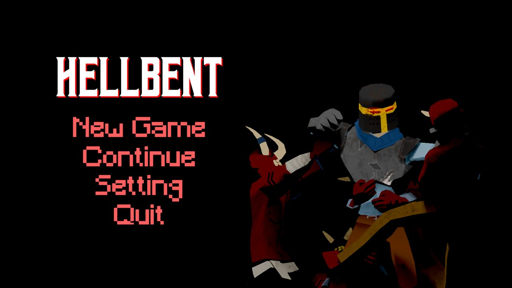
Breathing red eyes
Two slits in the knight's helm glow and fade on offset breathing cycles.
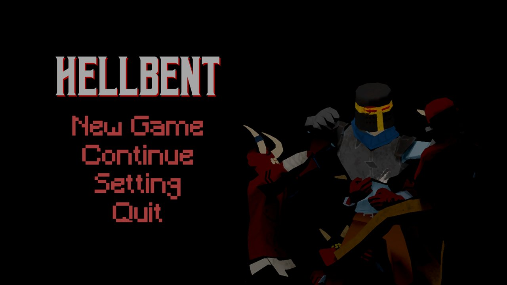
Fade to black
New Game and Continue fade the menu out before the level loads.
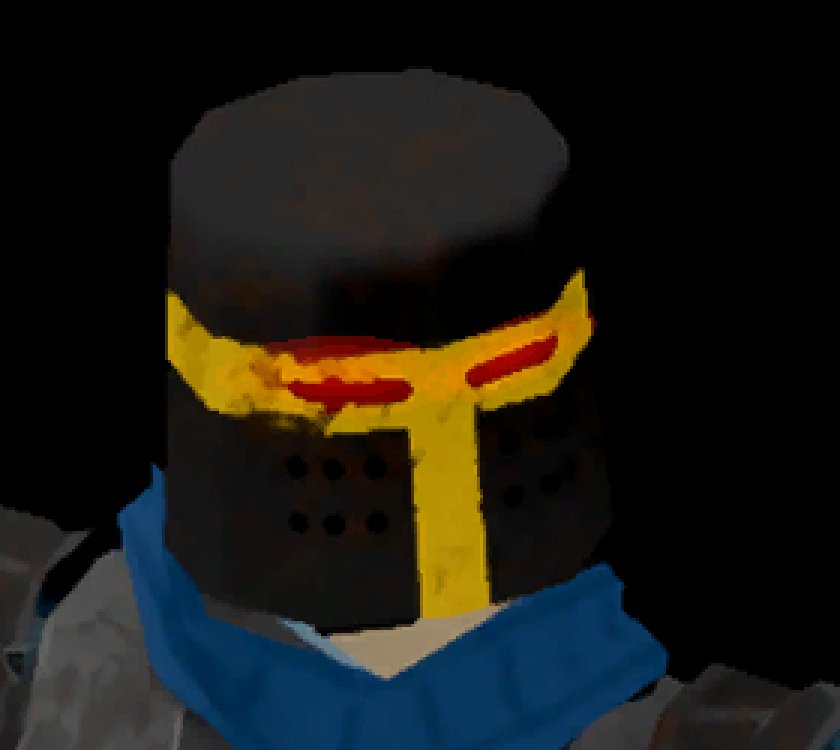
Close-up
A bright core plus a soft additive halo, sized and rotated to match each slit in the artwork.
Eyes: each eye is a core glow with a larger additive halo that swells slightly as it brightens. The two eyes start half a second apart so they never breathe in lockstep.
Transition: pressing New Game or Continue blocks further input, fades a black overlay in over about 0.9 seconds, and only then starts the run or restores the checkpoint, so players can't double-fire a level load.
Spawn Intro & Camera Fixes
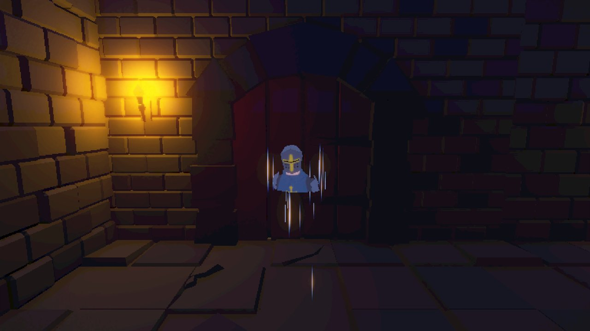
1. Face the player
The camera starts in front of the character while the teleport effect reveals them from the head down.
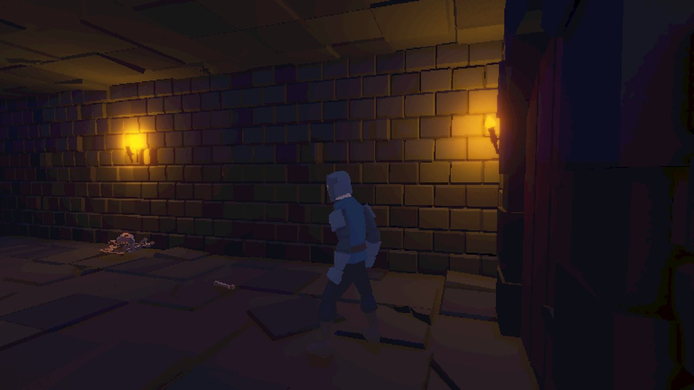
2. Orbit
After the effect the camera sweeps around the player and settles into the normal over-the-shoulder view.
Camera pop at level start: the camera used to spend a frame or two looking at the previous position before snapping onto the player. The spawn effect now frames the player on the very first frame and re-snaps after the level has placed them.
A regression I caught: my first fix forced the camera to follow the player's root, which dropped the view a meter lower than before. I measured the old and new framing, found the camera follows a CameraTarget child at head height, and made the spawn code use it.
Intro timing: about 1.7s for the reveal and a 1.4s eased orbit, with movement and combat locked until it finishes. The whole intro can be switched off, and its tilt and duration are exposed in the inspector.
Ongoing Development & Next Steps
Hellbent is an active, ongoing project, and the systems above are still being tuned through playtesting. Next up is broader accessibility support (including options for the new combat feedback and screen effects), more Attunement behaviours and shrine variants, and further polish on menu interactions with advanced tweening transitions so the interface feels as fluid and responsive as the combat itself.